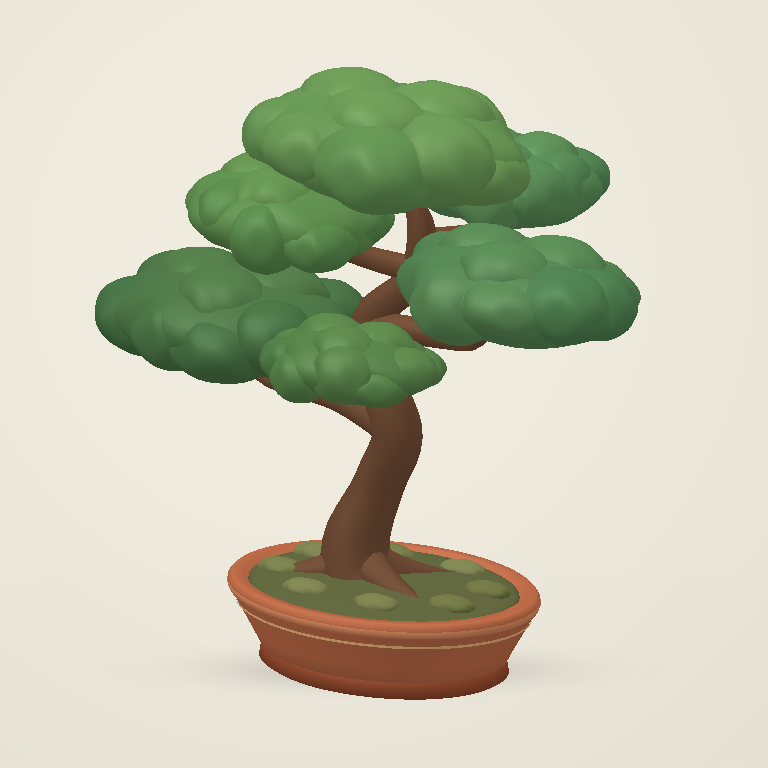

Build from photos
Take a front view, then move a quarter turn to the right. Keep the subject still and both photos at the same height.
Add a 45° view
From the front, move halfway toward the right view. Keep the object upright at the same camera height.
Working with a cup? Fit its rim and handle
Photos stay on this device. Outlines determine the shape. Hidden details and real-world scale are estimates.
MESH PREVIEW
Studio bonsai

Reference sculpture